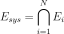

IntersectionEvent¶
- class IntersectionEvent(*args)¶
Event defined as the intersection of several events.
The occurrence of all the events is necessary for the system event to occur (parallel system):

- Parameters
- collsequence of
RandomVector Collection of events
- collsequence of
See also
Event
Examples
>>> import openturns as ot >>> dim = 2 >>> X = ot.RandomVector(ot.Normal(dim)) >>> f1 = ot.SymbolicFunction(['x1', 'x2'], ['x1']) >>> f2 = ot.SymbolicFunction(['x1', 'x2'], ['x2']) >>> Y1 = ot.CompositeRandomVector(f1, X) >>> Y2 = ot.CompositeRandomVector(f2, X) >>> e1 = ot.ThresholdEvent(Y1, ot.Less(), 0.0) >>> e2 = ot.ThresholdEvent(Y2, ot.Greater(), 0.0) >>> event = ot.IntersectionEvent([e1, e2])
Then it can be used for sampling (or with simulation algorithms):
>>> p = event.getSample(1000).computeMean()
Methods
Accessor to the antecedent random vector.
Accessor to the object's name.
Accessor to the composed event.
Accessor to the covariance of the RandomVector.
Accessor to the description of the RandomVector.
Accessor to the dimension of the RandomVector.
Accessor to the distribution of the RandomVector.
Accessor to the domain of the Event.
Accessor to sub events.
Accessor to the function.
getId()Accessor to the object's id.
getMarginal(*args)Get the random vector corresponding to the
 marginal component(s).
marginal component(s).getMean()Accessor to the mean of the RandomVector.
getName()Accessor to the object's name.
Accessor to the comparaison operator of the Event.
Accessor to the parameter of the distribution.
Accessor to the parameter description of the distribution.
Get the stochastic process.
Compute one realization of the RandomVector.
getSample(size)Compute realizations of the RandomVector.
Accessor to the object's shadowed id.
Accessor to the threshold of the Event.
Accessor to the object's visibility state.
hasName()Test if the object is named.
Test if the object has a distinguishable name.
Accessor to know if the RandomVector is a composite one.
isEvent()Whether the random vector is an event.
setDescription(description)Accessor to the description of the RandomVector.
setEventCollection(collection)Accessor to sub events.
setName(name)Accessor to the object's name.
setParameter(parameters)Accessor to the parameter of the distribution.
setShadowedId(id)Accessor to the object's shadowed id.
setVisibility(visible)Accessor to the object's visibility state.
- __init__(*args)¶
- getAntecedent()¶
Accessor to the antecedent random vector.
- Returns
- antecedent
RandomVector Defined as the root cause.
- antecedent
- getClassName()¶
Accessor to the object’s name.
- Returns
- class_namestr
The object class name (object.__class__.__name__).
- getComposedEvent()¶
Accessor to the composed event.
- Returns
- composed
RandomVector Composed event.
- composed
- getCovariance()¶
Accessor to the covariance of the RandomVector.
- Returns
- covariance
CovarianceMatrix Covariance of the considered
UsualRandomVector.
- covariance
Examples
>>> import openturns as ot >>> distribution = ot.Normal([0.0, 0.5], [1.0, 1.5], ot.CorrelationMatrix(2)) >>> randomVector = ot.RandomVector(distribution) >>> ot.RandomGenerator.SetSeed(0) >>> print(randomVector.getCovariance()) [[ 1 0 ] [ 0 2.25 ]]
- getDescription()¶
Accessor to the description of the RandomVector.
- Returns
- description
Description Describes the components of the RandomVector.
- description
- getDimension()¶
Accessor to the dimension of the RandomVector.
- Returns
- dimensionpositive int
Dimension of the RandomVector.
- getDistribution()¶
Accessor to the distribution of the RandomVector.
- Returns
- distribution
Distribution Distribution of the considered
UsualRandomVector.
- distribution
Examples
>>> import openturns as ot >>> distribution = ot.Normal([0.0, 0.0], [1.0, 1.0], ot.CorrelationMatrix(2)) >>> randomVector = ot.RandomVector(distribution) >>> ot.RandomGenerator.SetSeed(0) >>> print(randomVector.getDistribution()) Normal(mu = [0,0], sigma = [1,1], R = [[ 1 0 ] [ 0 1 ]])
- getDomain()¶
Accessor to the domain of the Event.
- Returns
- domain
Domain Describes the domain of an event.
- domain
- getEventCollection()¶
Accessor to sub events.
- Returns
- events
RandomVectorCollection List of sub events.
- events
- getId()¶
Accessor to the object’s id.
- Returns
- idint
Internal unique identifier.
- getMarginal(*args)¶
Get the random vector corresponding to the
marginal component(s).- Parameters
- iint or list of ints,

Indicates the component(s) concerned.
 is the dimension of the
RandomVector.
is the dimension of the
RandomVector.
- iint or list of ints,
- Returns
- vector
RandomVector RandomVector restricted to the concerned components.
- vector
Notes
Let’s note
 a random vector and
a random vector and
![I \in [1,n]](../../_images/math/51c159570d2ffbdc697d35ca4247b617daadb12c.svg) a set of indices. If
a set of indices. If  is a
is a
UsualRandomVector, the subvector is defined by . If is a
. If is a
CompositeRandomVector, defined by with
with  ,
,
 some scalar functions, the subvector is
some scalar functions, the subvector is
 .
.Examples
>>> import openturns as ot >>> distribution = ot.Normal([0.0, 0.0], [1.0, 1.0], ot.CorrelationMatrix(2)) >>> randomVector = ot.RandomVector(distribution) >>> ot.RandomGenerator.SetSeed(0) >>> print(randomVector.getMarginal(1).getRealization()) [0.608202] >>> print(randomVector.getMarginal(1).getDistribution()) Normal(mu = 0, sigma = 1)
- getMean()¶
Accessor to the mean of the RandomVector.
- Returns
- mean
Point Mean of the considered
UsualRandomVector.
- mean
Examples
>>> import openturns as ot >>> distribution = ot.Normal([0.0, 0.5], [1.0, 1.5], ot.CorrelationMatrix(2)) >>> randomVector = ot.RandomVector(distribution) >>> ot.RandomGenerator.SetSeed(0) >>> print(randomVector.getMean()) [0,0.5]
- getName()¶
Accessor to the object’s name.
- Returns
- namestr
The name of the object.
- getOperator()¶
Accessor to the comparaison operator of the Event.
- Returns
- operator
ComparisonOperator Comparaison operator used to define the
RandomVector.
- operator
- getParameter()¶
Accessor to the parameter of the distribution.
- Returns
- parameter
Point Parameter values.
- parameter
- getParameterDescription()¶
Accessor to the parameter description of the distribution.
- Returns
- description
Description Parameter names.
- description
- getProcess()¶
Get the stochastic process.
- Returns
- process
Process Stochastic process used to define the
RandomVector.
- process
- getRealization()¶
Compute one realization of the RandomVector.
- Returns
- aRealization
Point Sequence of values randomly determined from the RandomVector definition. In the case of an event: one realization of the event (considered as a Bernoulli variable) which is a boolean value (1 for the realization of the event and 0 else).
- aRealization
See also
Examples
>>> import openturns as ot >>> distribution = ot.Normal([0.0, 0.0], [1.0, 1.0], ot.CorrelationMatrix(2)) >>> randomVector = ot.RandomVector(distribution) >>> ot.RandomGenerator.SetSeed(0) >>> print(randomVector.getRealization()) [0.608202,-1.26617] >>> print(randomVector.getRealization()) [-0.438266,1.20548]
- getSample(size)¶
Compute realizations of the RandomVector.
- Parameters
- nint,

Number of realizations needed.
- nint,
- Returns
- realizations
Sample n sequences of values randomly determined from the RandomVector definition. In the case of an event: n realizations of the event (considered as a Bernoulli variable) which are boolean values (1 for the realization of the event and 0 else).
- realizations
See also
Examples
>>> import openturns as ot >>> distribution = ot.Normal([0.0, 0.0], [1.0, 1.0], ot.CorrelationMatrix(2)) >>> randomVector = ot.RandomVector(distribution) >>> ot.RandomGenerator.SetSeed(0) >>> print(randomVector.getSample(3)) [ X0 X1 ] 0 : [ 0.608202 -1.26617 ] 1 : [ -0.438266 1.20548 ] 2 : [ -2.18139 0.350042 ]
- getShadowedId()¶
Accessor to the object’s shadowed id.
- Returns
- idint
Internal unique identifier.
- getThreshold()¶
Accessor to the threshold of the Event.
- Returns
- thresholdfloat
Threshold of the
RandomVector.
- getVisibility()¶
Accessor to the object’s visibility state.
- Returns
- visiblebool
Visibility flag.
- hasName()¶
Test if the object is named.
- Returns
- hasNamebool
True if the name is not empty.
- hasVisibleName()¶
Test if the object has a distinguishable name.
- Returns
- hasVisibleNamebool
True if the name is not empty and not the default one.
- isComposite()¶
Accessor to know if the RandomVector is a composite one.
- Returns
- isCompositebool
Indicates if the RandomVector is of type Composite or not.
- isEvent()¶
Whether the random vector is an event.
- Returns
- isEventbool
Whether it takes it values in {0, 1}.
- setDescription(description)¶
Accessor to the description of the RandomVector.
- Parameters
- descriptionstr or sequence of str
Describes the components of the RandomVector.
- setEventCollection(collection)¶
Accessor to sub events.
- Parameters
- eventssequence of
RandomVector List of sub events.
- eventssequence of
- setName(name)¶
Accessor to the object’s name.
- Parameters
- namestr
The name of the object.
- setParameter(parameters)¶
Accessor to the parameter of the distribution.
- Parameters
- parametersequence of float
Parameter values.
- setShadowedId(id)¶
Accessor to the object’s shadowed id.
- Parameters
- idint
Internal unique identifier.
- setVisibility(visible)¶
Accessor to the object’s visibility state.
- Parameters
- visiblebool
Visibility flag.